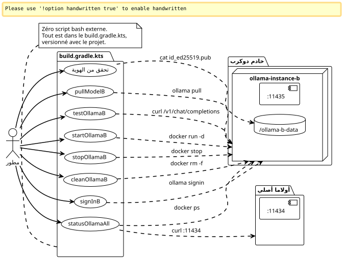

مكوّن Gradle منزلي للتحكم في مثيلين Ollama Pro بالتوازي
Publié le 08 May 2026
لماذا تكتب أوامر docker يدويًا عندما يمكنك تغليف كل شيء في مهام Gradle؟ إليك كيف أتممت تكوين dual-Ollama Pro الخاص بي دون أي سكريبت shell externe. التشغيل، الإيقاف، الهوية، تسجيل الدخول، السحب — كل شيء يمر عبر`./gradlew`.
مقدمة
في المقالة السابقة، أظهرت كيفية جعل حسابين Ollama Pro يتشاركان نفس الجهاز من خلال عزل المثيل الثاني في حاوية Docker. يعمل التركيب، لكن الإدارة اليومية تصبح مملة بسرعة: تذكر اسم الحاوية، وإعادة تشغيل الأوامر الصحيحة`docker exec`, التحقق من أي منفذ نشط…
هل تعرف هذا اللحظة عندما يكون لديك 14 طرفية مفتوحة، وأنت تكتب`docker exec ollama-instance-b ollama list`للمرّة الرابعة، وتقول لنفسك «يجب أن يكون هناك طريقة أنظف» ؟
هذه الطريقة هي Gradle.
ليس فقط لبناء الكود. Gradle كقائد أوركسترا للبنية التحتية المحلية. مهام تقوم بالإعداد، والتحقق، والاختبار، والتنظيف. كل ذلك مُدارة بالإصدارات في`build.gradle.kts`الذي يعيش accanto du? Wait need correct translation: "الذي يعيش بجانب". So leading space then that.
Thus output: " الذي يعيش بجانب". Ensure no extra characters. Let’s output exactly: a space then "الذي يعيش بجانب".
</think>
الذي يعيش بجانب`docker-compose.yml`.

لماذا Gradle للبنية التحتية؟
السؤال مشروع. Gradle هو أداة بناء. عادةً ما يقوم بالترجمة والاختبار والتعبئة. لا يقوم بتشغيل حاويات Docker.
ما عدا أن Gradle هو أيضًا محرك رسم بياني للاعتمادات — وهو ما يصبح مثيرًا للاهتمام لحالتنا.
نريد:
-
أن يُطلق الحاوية قبل تسجيل الدخول
-
أن يتم التحقق من الهوية قبل سحب النموذج
-
إذا فشل اختبار API بصمت عندما يكون الحاوية متوقفاً
من الرسم البياني النقي للاعتمادات. Gradle مصمم لذلك. يجعل DSL Kotlin كتابة المهام سلسة، و`doLast`يسمح بتنفيذ أوامر النظام كما لو كانت كودًا تطبيقيًا.
وأهم من ذلك: لا يوجد bashrc يحتاج إلى صيانة، ولا سكريبتات ملقاة في`~/bin`, لا يوجد ملف Makefile بجانب docker-compose. كل شيء موجود في ملف واحد، في نفس مكان كود المشروع.
الbuild.gradle.kts الكامل
هذا هو الملف الذي كتبت أخيرًا. يقوم بكل شيء، من تهيئة التخزين إلى فحص curl، مرورًا بتسجيل الدخول التفاعلي.
import java.io.ByteArrayOutputStream
plugins {
base
}
// -------------------------------------------------------------------------
// Configuration
// -------------------------------------------------------------------------
val instanceName = "ollama-instance-b"
val instancePort = 11435
val instanceImage = "ollama/ollama:0.20.2"
val dataDir = file("${System.getProperty("user.home")}/ollama-b-data")
val nativePort = 11434
// Modèles à gérer — cloud Pro + un modèle local gratuit pour les tests
val proModels = listOf("deepseek-v4-pro:cloud", "gemma4:31b-cloud")
val freeModels = listOf("qwen3:0.6b")
// -------------------------------------------------------------------------
// Tâche préparatoire — création du volume si absent
// -------------------------------------------------------------------------
val prepareVolume by tasks.registering {
group = "ollama"
description = "Crée le répertoire de volume pour l'instance B si absent"
doLast {
if (!dataDir.exists()) {
dataDir.mkdirs()
println("Volume créé : ${dataDir.absolutePath}")
} else {
println("Volume existant : ${dataDir.absolutePath}")
}
}
}
// -------------------------------------------------------------------------
// Démarrage du conteneur Docker
// -------------------------------------------------------------------------
val startOllamaB by tasks.registering(Exec::class) {
group = "ollama"
description = "Lance le conteneur Docker pour l'instance Ollama B"
dependsOn(prepareVolume)
commandLine(
"docker", "run", "-d",
"--name", instanceName,
"-p", "$instancePort:11434",
"-v", "${dataDir.absolutePath}:/root/.ollama",
"-e", "OLLAMA_HOST=0.0.0.0",
"--restart", "always",
instanceImage
)
isIgnoreExitValue = true
doLast {
val alreadyRunning = executionResult.get().exitValue != 0
if (alreadyRunning) {
logger.lifecycle("Le conteneur '$instanceName' existe déjà — tentative de démarrage")
} else {
logger.lifecycle("Conteneur '$instanceName' lancé")
}
}
}
// -------------------------------------------------------------------------
// Arrêt du conteneur
// -------------------------------------------------------------------------
val stopOllamaB by tasks.registering(Exec::class) {
group = "ollama"
description = "Arrête le conteneur Docker de l'instance B"
commandLine("docker", "stop", instanceName)
isIgnoreExitValue = true
doLast {
logger.lifecycle("Conteneur '$instanceName' arrêté")
}
}
// -------------------------------------------------------------------------
// Affichage de la clé publique (Device Key)
// -------------------------------------------------------------------------
val checkIdentity by tasks.registering(Exec::class) {
group = "ollama"
description = "Affiche la clé publique SSH de l'instance B"
dependsOn(startOllamaB)
commandLine("docker", "exec", instanceName, "cat", "/root/.ollama/id_ed25519.pub")
standardOutput = ByteArrayOutputStream()
doLast {
val pubKey = standardOutput.toString().trim()
println("=".repeat(60))
println("Device Key (Instance B)")
println("=".repeat(60))
println(pubKey)
println("=".repeat(60))
println("→ Enregistre cette clé sur https://ollama.com/settings/keys")
println("→ Puis exécute : ./gradlew signInB")
println("=".repeat(60))
}
}
// -------------------------------------------------------------------------
// Sign-in interactif (Ouvrira le navigateur)
// -------------------------------------------------------------------------
val signInB by tasks.registering(Exec::class) {
group = "ollama"
description = "Lance l'authentification interactive Ollama pour le compte B"
dependsOn(startOllamaB)
standardInput = System.`in`
standardOutput = System.out
errorOutput = System.err
commandLine("docker", "exec", "-it", instanceName, "ollama", "signin")
doFirst {
logger.lifecycle("Authentification pour le Compte Pro B...")
logger.lifecycle("Ouvre ton navigateur et connecte-toi avec l'email du compte B")
}
}
// -------------------------------------------------------------------------
// Pull d'un modèle (paramétrable via propriété Gradle)
// -------------------------------------------------------------------------
val pullModelB by tasks.registering(Exec::class) {
group = "ollama"
description = "Pull un modèle sur l'instance B. Usage : ./gradlew pullModelB -Pmodel=nom:tag"
dependsOn(startOllamaB)
val modelName = project.findProperty("model") as? String ?: "qwen3:0.6b"
commandLine("docker", "exec", instanceName, "ollama", "pull", modelName)
doFirst {
logger.lifecycle("Pull du modèle '$modelName' sur l'instance B...")
}
doLast {
logger.lifecycle("Modèle '$modelName' pullé avec succès")
}
}
// -------------------------------------------------------------------------
// Pull de tous les modèles Pro (batch)
// -------------------------------------------------------------------------
val pullAllProModels by tasks.registering {
group = "ollama"
description = "Pull tous les modèles cloud Pro sur l'instance B"
dependsOn(startOllamaB)
doLast {
proModels.forEach { model ->
logger.lifecycle("→ Pull $model...")
val process = ProcessBuilder("docker", "exec", instanceName, "ollama", "pull", model)
.inheritIO()
.start()
process.waitFor()
}
logger.lifecycle("Tous les modèles Pro pullés")
}
}
// -------------------------------------------------------------------------
// Pull de tous les modèles gratuits (batch / première install)
// -------------------------------------------------------------------------
val pullAllFreeModels by tasks.registering {
group = "ollama"
description = "Pull tous les modèles locaux gratuits sur l'instance B"
dependsOn(startOllamaB)
doLast {
freeModels.forEach { model ->
logger.lifecycle("→ Pull $model...")
val process = ProcessBuilder("docker", "exec", instanceName, "ollama", "pull", model)
.inheritIO()
.start()
process.waitFor()
}
logger.lifecycle("Tous les modèles gratuits pullés")
}
}
// -------------------------------------------------------------------------
// Liste des modèles disponibles sur l'instance B
// -------------------------------------------------------------------------
val listModelsB by tasks.registering(Exec::class) {
group = "ollama"
description = "Liste les modèles disponibles sur l'instance B"
dependsOn(startOllamaB)
commandLine("docker", "exec", instanceName, "ollama", "list")
}
// -------------------------------------------------------------------------
// Health check — test API sur les deux instances
// -------------------------------------------------------------------------
val testOllamaB by tasks.registering {
group = "ollama"
description = "Teste la connectivité API de l'instance B avec un simple chat"
dependsOn(startOllamaB)
doLast {
val model = project.findProperty("model") as? String ?: "qwen3:0.6b"
logger.lifecycle("Test de l'instance B avec le modèle '$model'...")
val payload = """
{
"model": "$model",
"messages": [{"role": "user", "content": "Réponds uniquement par OK"}],
"max_tokens": 5
}
""".trimIndent()
val process = ProcessBuilder(
"curl", "-s", "http://localhost:$instancePort/v1/chat/completions",
"-H", "Content-Type: application/json",
"-d", payload
).start()
val response = process.inputStream.bufferedReader().readText()
process.waitFor()
if (response.contains("\"id\":\"chatcmpl") || response.contains("\"choices\"")) {
println("✓ Instance B OK — port $instancePort répond")
println(" Response: ${response.take(120)}...")
} else {
println("✗ Instance B INACTIVE — vérifie le conteneur avec './gradlew statusOllamaAll'")
println(" Raw: $response")
}
}
}
// -------------------------------------------------------------------------
// Health check sur les deux instances simultanément
// -------------------------------------------------------------------------
val statusOllamaAll by tasks.registering {
group = "ollama"
description = "Vérifie le statut des deux instances Ollama (native + Docker)"
doLast {
// Instance native
runCatching {
val process = ProcessBuilder(
"curl", "-s", "-o", "/dev/null", "-w", "%{http_code}",
"http://localhost:$nativePort/api/tags"
).start()
val code = process.inputStream.bufferedReader().readText().trim()
process.waitFor()
println(if (code == "200") "✓ Instance Native — port $nativePort OK (HTTP $code)"
else "✗ Instance Native — port $nativePort (HTTP $code)")
}.getOrElse {
println("✗ Instance Native — injoignable sur le port $nativePort")
}
// Instance Docker
runCatching {
val process = ProcessBuilder(
"curl", "-s", "-o", "/dev/null", "-w", "%{http_code}",
"http://localhost:$instancePort/api/tags"
).start()
val code = process.inputStream.bufferedReader().readText().trim()
process.waitFor()
println(if (code == "200") "✓ Instance Docker B — port $instancePort OK (HTTP $code)"
else "✗ Instance Docker B — port $instancePort (HTTP $code)")
}.getOrElse {
println("✗ Instance Docker B — injoignable sur le port $instancePort")
}
// Info conteneur
runCatching {
val process = ProcessBuilder("docker", "ps", "--filter", "name=$instanceName",
"--format", "table {{.Names}}\\t{{.Status}}\\t{{.Ports}}").start()
val status = process.inputStream.bufferedReader().readText()
process.waitFor()
println()
println("Conteneur Docker :")
println(status)
}
}
}
// -------------------------------------------------------------------------
// Nettoyage complet
// -------------------------------------------------------------------------
val cleanOllamaB by tasks.registering(Exec::class) {
group = "ollama"
description = "Arrête et supprime le conteneur Docker de l'instance B"
dependsOn(stopOllamaB)
commandLine("docker", "rm", instanceName)
isIgnoreExitValue = true
doLast {
logger.lifecycle("Conteneur '$instanceName' supprimé")
logger.lifecycle("Le volume ${dataDir.absolutePath} est conservé (identité persistante)")
}
}
// -------------------------------------------------------------------------
// Affichage des instructions
// -------------------------------------------------------------------------
val helpOllama by tasks.registering {
group = "ollama"
description = "Affiche l'aide des tâches Ollama disponibles"
doLast {
println("""
╔══════════════════════════════════════════════════════════════╗
║ Tâches Gradle — Pilotage Dual Ollama Pro ║
╠══════════════════════════════════════════════════════════════╣
║ ./gradlew startOllamaB Démarrer l'instance Docker B ║
║ ./gradlew stopOllamaB Arrêter l'instance Docker B ║
║ ./gradlew checkIdentity Afficher la clé SSH publique ║
║ ./gradlew signInB Sign-in interactif compte B ║
║ ./gradlew pullModelB Pull un modèle (-Pmodel=...) ║
║ ./gradlew pullAllProModels Pull tous les modèles Pro ║
║ ./gradlew pullAllFreeModels Pull tous les modèles gratuits ║
║ ./gradlew listModelsB Lister les modèles instance B ║
║ ./gradlew testOllamaB Test API avec un chat simple ║
║ ./gradlew statusOllamaAll Santé des 2 instances ║
║ ./gradlew cleanOllamaB Supprimer le conteneur ║
║ ./gradlew helpOllama Cette aide ║
╚══════════════════════════════════════════════════════════════╝
""".trimIndent())
}
}هنا. اثنتا عشرة مهمة، نقطة دخول واحدة، وصفر احتكاك
تشريح المهام الرئيسية
startOllamaB` — المنطلِق
ليس أمرًا صعبًا: واحد`docker run -d`مع الإعدادات الصحيحة. النصيحة في`isIgnoreExitValue = true`.
isIgnoreExitValue = trueإذا كان الحاوية موجودة مسبقًا، الأمر`docker run`يفشل (رمز الخروج ≠ 0). بدون هذه الخاصية، سيتوقف Gradle عن تنفيذ كل البناء بسبب خطأ. هنا، الفشل صامت — وال`doLast` يكتشف ما إذا كان "موجودًا مسبقًا" أو خطأً حقيقيًا.
Le `doLast`إنه حاسم : يدور بعد تنفيذ الأمر، مما يسمح بالتفتيش`executionResult.get().exitValue`و تسجيل رسالة مناسبة
signInB` — التفاعلي
هذه هي المهمة الوحيدة التي تتطلب تفاعلًا بشريًا. Gradle ينقل`System.in`إلى العملية بحيث يكون المُحفّز`ollama signin`يمكن أن يعرض بشكل طبيعي :
standardInput = System.`in`
standardOutput = System.out
errorOutput = System.errبدون ذلك، سيتعطل تسجيل الدخول لأن stdin سيكون مغلقًا ولن ترى أبدًا المطالب.
pullModelB` — قابل للتخصيص
مهمة عامة تقبل معلمة عبر`-P` :
./gradlew pullModelB -Pmodel=deepseek-v4-pro:cloud
./gradlew pullModelB # fallback : qwen3:0.6bالاستبدال الاحتياطي مهم :`project.findProperty("model") as? String ?: "qwen3:0.6b"`يضمن أن المهمة لا تفشل إذا نسينا المعلمة.
statusOllamaAll` — التشخيص
اثنين`curl`في الصحة على الموانئ`11434` et 11435, مع احتياطي في`runCatching`لتجنب التعطل إذا كانت إحدى المثيلات معطلة. المخرج منظّم :
✓ Instance Native — port 11434 OK (HTTP 200)
✓ Instance Docker B — port 11435 OK (HTTP 200)
Conteneur Docker :
NAMES STATUS PORTS
ollama-instance-b Up 3 hours 0.0.0.0:11435->11434/tcpنظرة واحدة، وتعرف بالضبط ما يدور وما هو معطل.
cleanOllamaB` — التنظيف الذي يحافظ على الهوية
commandLine("docker", "rm", instanceName)
isIgnoreExitValue = trueالحاوية محذوفة، لكن الحجم`~/ollama-b-data`هومحفوظ. هوية SSH تبقى على قيد الحياة بعد التنظيف. في التالي`startOllamaB`, نفس المفاتيح ستُعاد استخدامها — لا حاجة لإعادة تسجيل الدخول ولا لإعادة تسجيل مفتاح الجهاز.
|
|
سير عمل كامل — من الصفر إلى جلستين
هذه هي التسلسل المثالي لشخص يصل إلى المشروع ويريد إعداد كل شيء دون فتح الوثائق :
# 1. Premier contact — que faire ?
$ ./gradlew helpOllama
# 2. On démarre l'instance B
$ ./gradlew startOllamaB
# 3. On récupère la Device Key et on l'enregistre sur ollama.com
$ ./gradlew checkIdentity
# → copier-coller de la clé sur https://ollama.com/settings/keys
# 4. Authentification interactive
$ ./gradlew signInB
# 5. Pull d'un petit modèle gratuit pour tester la plomberie
$ ./gradlew pullModelB
# 6. Test API
$ ./gradlew testOllamaB
# 7. Si tout est vert, pull des modèles Pro
$ ./gradlew pullAllProModels
# 8. Vérification finale des deux instances
$ ./gradlew statusOllamaAllأقل من دقيقتين، كل شيء مُجهز. لا يوجد README لقراءته، ولا متغيرات بيئة لتعيينها. المهمة`helpOllama`يعمل كوثيقة مدمجة
Failed to generate image: PlantUML preprocessing failed: [From <input> (line 6) ]
@startuml
...
... ( skipping 126 lines )
...
skinparam StereotypeE {
BackgroundColor white
BorderColor black
}
skinparam StereotypeI {
BackgroundColor white
BorderColor black
}
skinparam StereotypeN {
BackgroundColor white
BorderColor black
}
skinparam UseCaseStereoType {
FontColor black
FontName Verdana
}
skinparam DefaultFontSize 11
actor Développeur as Dev
participant "Gradle
^^^^^
Syntax Error? (Assumed diagram type: sequence)
@startuml
!theme plain
skinparam DefaultFontSize 11
actor Développeur as Dev
participant "Gradle
(build.gradle.kts)" as Gradle
participant "Docker
Daemon" as Docker
participant "Ollama
مثيل ب" as OllamaB
participant "Ollama
سحابة" as Cloud
== Provisionnement ==
Dev -> Gradle : helpOllama
Gradle --> Dev : Aide et instructions
Dev -> Gradle : startOllamaB
Gradle -> Docker : docker run -d ollama/ollama:0.20.2
Docker -> OllamaB : Génération clés SSH (id_ed25519)
Docker --> Gradle : conteneur lancé
Gradle --> Dev : OK
Dev -> Gradle : checkIdentity
Gradle -> Docker : cat id_ed25519.pub
Gradle --> Dev : Clé publique SSH
Dev -> Cloud : Enregistrement clé SSH\n(sur ollama.com/settings/keys)
== Authentification ==
Dev -> Gradle : signInB
Gradle -> Docker : ollama signin (interactif)
Dev <-> Cloud : Login navigateur (compte B)
Docker -> Cloud : Échange token ⇔ Device Key
Gradle --> Dev : Authentifié
== Vérification ==
Dev -> Gradle : pullModelB
Gradle -> Docker : ollama pull qwen3:0.6b
Gradle --> Dev : Modèle pullé
Dev -> Gradle : testOllamaB
Gradle -> Docker : curl /v1/chat/completions
Gradle --> Dev : ✓ Instance B OK
== Production ==
Dev -> Gradle : pullAllProModels
Gradle -> Docker : ollama pull deepseek-v4-pro:cloud
Gradle -> Docker : ollama pull gemma4:31b-cloud
Gradle --> Dev : Modèles Pro pullés
Dev -> Gradle : statusOllamaAll
Gradle --> Dev : ✓ Native ✓ Docker B
@enduml
لماذا لا نجعله مكوّنًا حقيقيًا لـ Gradle؟
سؤال مشروع. استخراج هذا`build.gradle.kts`الإعلان عما هو موصوف هنا في إضافة Gradle مستقلة سيوفر مزايا: إعادة الاستخدام بين المشاريع، التكوين التصريحي، امتداد DSL.
لكن في الوقت الحالي، هذا غير منطقي. لا يحتوي هذا البناء على منطق أعمال معقد — إنه مجرد غلاف حول أوامر Docker و curl. إضافة طبقة من إضافة Gradle كاملة (مع امتداد، اختبارات وحدة، نشر) ستكون مبالغة لـ 12 مهمة مفيدة.
Le `build.gradle.kts`inline يعيش داخل المشروع الذي يحتاجه. من السهل نسخه إلى مكان آخر. إذا كان لدي يوماً ثلاثة مشاريع تعتمد عليه، فسأحوّله إلى مكوّن إضافي. في الوقت الحالي، KISS.
|
اليوم الذي لديك فيه ثلاث`build.gradle.kts`متطابقة في ثلاثة مشاريع، فهذه إشارة إلى أنه يجب استخراج ملحق. قبل ذلك، فإن التكرار أقل تكلفة من التجريد. حكمة مطور. |
الدروس المستفادة
-
Gradle ليس مجرد أداة بناء— محرك رسم بياني للتبعيات يجعله منظمًا للبنية التحتية المرعبة`doLast`,
isIgnoreExitValue, `dependsOn`هذه primitives الثلاثة تكفي لتشغيل حاوية Docker بنفس موثوقية خط أنابيب CI. -
isIgnoreExitValue` هو صديقك— في عالم مثالي,
docker run`على حاوية موجودة مسبقًا سيعرض تحذيرًا بدلاً من رمز خروج خطأ. في العالم الحقيقي، أنت تضع`isIgnoreExitValue = true`وأنت تتعامل مع التشخيص في`doLast. -
المهام القابلة للتخصيص تزيل الغموض — Un
pullModelB`عام مع-Pmodel=…`يستبدل N مهام متخصصة. مهمة واحدة، وثيقة واحدة، سلوك واحد. -
runCatching` لفحوصات الصحة— عند اختبار N نقاط نهاية، لا يجب أن يمنع تعطل الأول من اختبار الباقي.
runCatching+`getOrElse`لكل نقطة نهاية، ويظل التشخيص كاملاً حتى في حالة حدوث عطل جزئي. -
مهمة
helpOllamaكوثيقة قابلة للتنفيذ — Un `println()`مُنسق جيدًا يحل محل ملف README من ثلاثة فقرات. إنه موثق ذاتيًا، دائمًا محدث، ويمكن الوصول إليه دون مغادرة الطرف.
خاتمة
لقد انتقلنا من كتابة أوامر Docker يدويًا إلى سير عمل Gradle كامل، تحت سيطرة الإصدارات، قابل لإعادة الاستخدام. اثنتا عشرة مهمة تغطي كامل دورة الحياة: التجهيز، الهوية، تسجيل الدخول، السحب، الاختبار، التشخيص، التنظيف.
يشكّل مزيج docker-compose + build.gradle.kts + opencode.json ثلاثية نظيفة: Docker للعزل، Gradle للتنسيق، OpenCode للاستهلاك. كل طبقة لها مسؤوليتها، ولا يتجاوز أي منها على الآخر.
الخطوة التالية؟ أتمتة دورة الحياة في CI بحيث تكون مثيلات Ollama متاحة في بيئات التطوير المؤقتة. لكن ذلك، هو مقال آخر.